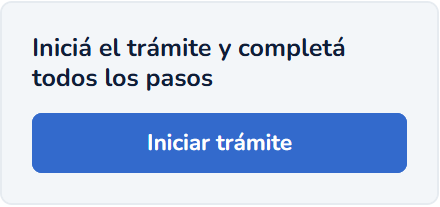
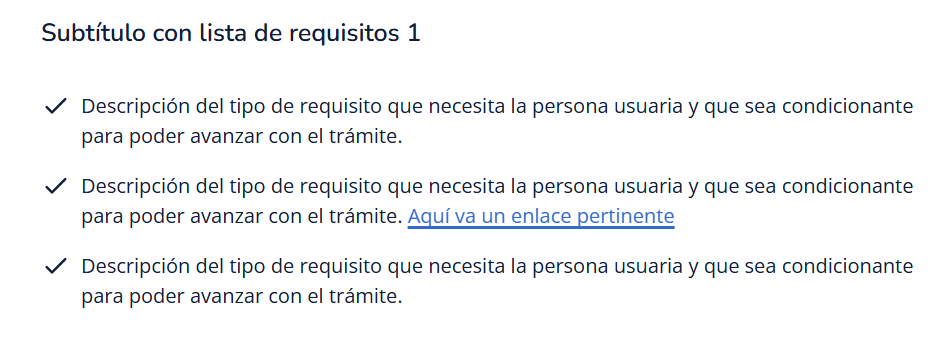
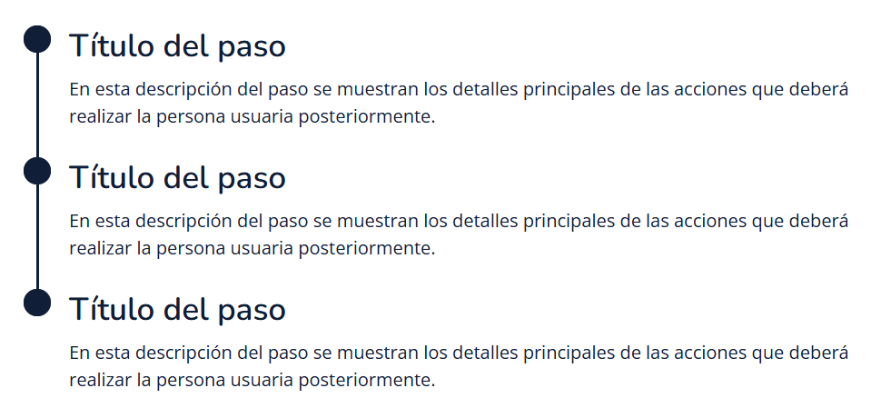
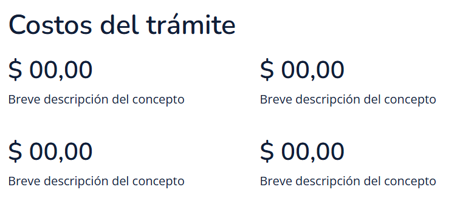
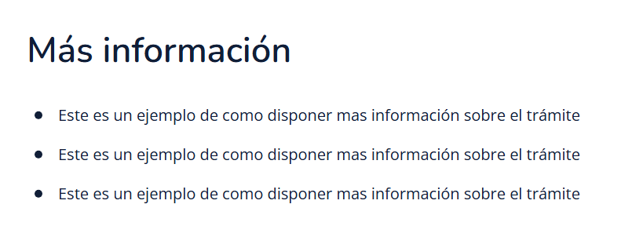
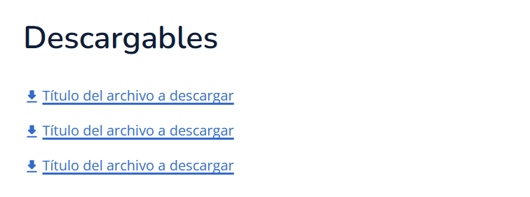
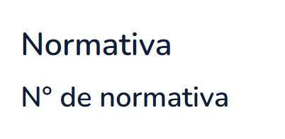
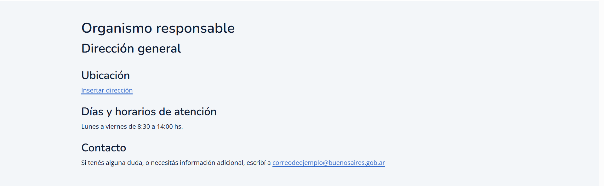

Guía de uso de template de trámites
Esta guía está diseñada para proporcionar una comprensión clara y completa de cómo utilizar el template de trámites de manera efectiva. La idea es asegurar la mejor experiencia posible a la persona usuaria y facilitar la implementación del template.
Si bien se contempla la máxima de contenido en esta propuesta, pueden ir quitando aquellos bloques que consideren que no se adaptan al contenido de la página.
¿Qué puede tener una página de trámite?
Una página de trámites puede estar compuesta por las siguientes secciones:
Encabezado
Va al comienzo de la página, justo debajo del header, y está formado por:
- Migas de pan, que nos indican el recorrido de la persona usuaria hasta la página actual.
- El título del trámite.
- Una breve descripción del trámite.
- La modalidad del trámite identificada con la etiqueta respectiva.
Buenas prácticas
El máximo de caracteres para el título es de 120 caracteres (incluyendo espacios).
La estructura para armar el título de los trámites es: ACCIÓN + NOMBRE DEL TRÁMITE.
El máximo de caracteres para la descripción del trámite es de 250 caracteres (incluyendo espacios).
Estado del trámite
Por medio del bloque de iniciar trámite la persona usuaria podrá iniciar su trámite o, si así lo requiera, continuarlo desde el paso en el que lo dejó por última vez.
Títulos de sección
Estos títulos son independientes a los componentes dentro del template y sirven para dividir e identificar cada una de las secciones y su contenido. Utilizan la etiqueta H2.
Requisitos del trámite
En esta sección se encuentran cada uno de los requisitos necesarios para realizar el trámite. Para mostrarlos se utiliza una lista de requisitos con check siguiendo los lineamientos de Obelisco, nuestro sistema de estándares y diseño.
Lista de requisitos Buenas prácticas
Las listas de requisitos llevan únicamente un subtítulo y contenido, cualquier elemento adicional debe ir fuera del componente.
El subtítulo de la lista de requisitos es opcional y puede omitirse en caso de no ser necesario.
Malas prácticas
No debe modificarse el componente de lista para incluir elementos externos.
No utilizar variables bold dentro de los ítems de la lista para no agregar carga cognitiva a la persona usuaria.
Pasos del trámite
En este bloque la persona usuaria podrá ver cada uno de los pasos organizados en secuencia que deberá realizar para completar el trámite. Para mostrarlos se utiliza una lista de pasos siguiendo los lineamientos de Obelisco, nuestro sistema de estándares y diseño.
Lista de pasos Buenas prácticas
Utilizar títulos claros y concisos. Usar verbos o frases de acción para indicar a la persona usuaria lo que sucederá en cada paso.
Usar la menor cantidad de pasos posibles para no abrumar a la persona usuaria. Si luego en el flujo verá más información, limitar la lista de pasos a una síntesis del proceso a realizar.
Malas prácticas
No utilizar este componente si el proceso tiene sólo un paso.
No utilizar el componente sólo con el título. Siempre debe contener, aunque mínima, una bajada explicativa.
No incluir componentes como listas informativas, bulleteados y botones dentro de la lista de pasos. La bajada debe consistir sólo en un párrafo de texto, y si es necesario puede poseer enlaces dentro del mismo.
Costos del trámite
Esta sección va luego de la lista de pasos, y muestra todos los costos relacionados al trámite. Es una bajada simple de título, subtítulos y descripción organizada por bloques. La descripción del concepto sirve para identificar la razón del costo y puede contener un enlace si lo necesita.
Buenas prácticas
Utilizar títulos claros y concisos. Usar verbos o frases de acción para indicar a la persona usuaria lo que sucederá en cada paso.
Usar la menor cantidad de pasos posibles para no abrumar a la persona usuaria. Si luego en el flujo verá más información, limitar la lista de pasos a una síntesis del proceso a realizar.
Malas prácticas
No utilizar este componente si el proceso tiene sólo un paso.
No utilizar el componente sólo con el título. Siempre debe contener, aunque mínima, una bajada explicativa.
No incluir componentes como listas informativas, bulleteados y botones dentro de la lista de pasos. La bajada debe consistir sólo en un párrafo de texto, y si es necesario puede poseer enlaces dentro del mismo.
Colapsables
Los colapsables se utilizan en caso que los trámites tengan información adicional de casos particulares. Es una buena forma de mostrar y ocultar secciones sin agregar información por fuera del template.
Para mostrarlos se utilizan colapsables de selección única siguiendo los lineamientos de Obelisco, nuestro sistema de estándares y diseño.
ColapsablesBuenas prácticas
Mantener títulos breves y claros. El encabezado es lo primero que capta la atención de la mayoría de las personas usuarias. Es fundamental que el contenido del colapsable se exprese de manera clara para que las personas usuarias puedan decidir si desean expandirlo o no.
Cada colapsable puede tener un máximo de 800 caracteres (contando espacios) para su descripción.
Malas prácticas
No utilizar un colapsable para el contenido que es necesario que esté visible. No ocultarlo dentro de un colapsable.
No utilizar más de 5 colapsables para sumar información. En todo caso, lo recomendable es buscar otros componentes que se adapten mejor al contenido o hacer bajadas sencillas de título y texto.
No utilizar más de 1 sección de colapsables.
Información adicional
Este bloque de contenido se utiliza para agregar información a destacar relacionada al trámite que no es parte de los requisitos o de los pasos a cumplir.
En este caso, se utiliza una lista informativa con viñeta o texto plano, siguiendo los lineamientos de Obelisco, nuestro sistema de estándares y diseño.
Lista informativa general Buenas prácticas
Utilizar listas informativas para piezas de información de texto que no tienen un orden secuencial.
Mantener la redacción del contenido de los ítems de forma consistente. Por ejemplo: siempre usar la misma voz y tono.
Utilizar texto plano cuando no es posible generar más de 1 ítem para la lista informativa.
Malas prácticas
No utilizar variables bold dentro de los ítems de la lista para no agregar carga cognitiva a la persona usuaria.
Al utilizar una lista informativa, no incluir más de 7 ítems en la misma.
No combinar listas informativas con listas de pasos.
Descargables
En este bloque la persona usuaria encontrará los descargables o archivos necesarios para realizar el trámite. En este caso, se utiliza una lista de enlaces siguiendo los lineamientos de Obelisco, nuestro sistema de estándares y diseño.
Lista de enlaces Buenas prácticas
El subtítulo de la lista debe ser coherente con el tipo de contenido que posee dentro.
El subtítulo de la lista de enlaces es opcional y puede omitirse en caso de no ser necesario.
Las listas de enlaces llevan únicamente un subtítulo y contenido, cualquier elemento adicional debe ir fuera del componente.
Malas prácticas
No se debe quitar el ícono que acompaña a los enlaces de descarga. Se utiliza como refuerzo semántico del tipo de enlace.
Normativa
El bloque de normativa muestra la normativa o las normativas relacionadas al trámite. Se trata de una bajada de texto simple con título y el número de normativa.
Buenas prácticas
La normativa es una sección obligatoria para algunos trámites, pero puede omitirse en caso de no ser necesaria.
Malas prácticas
No es posible combinar esta sección con otras dentro del template o cambiar su estructura. Evitar sumar elementos que no correspondan a la sección.
Organismo responsable
El organismo responsable es el ente gubernamental que se encarga de la regulación del trámite. Dentro de esta sección la persona usuaria tendrá acceso al nombre del organismo, la ubicación, los días y horarios de atención, y la información de contacto.
Buenas prácticas
Utilizar títulos, subtítulos y descripciones breves para jerarquizar e identificar la información, siguiendo el modelo del template.
Malas prácticas
No debe incluirse otro tipo de información que no sea sobre el organismo responsable en esta sección.
Contenido del template de trámites
Para mejorar la experiencia al volcar la información en cada una de las secciones del template de trámites, es importante tener en cuenta que se trata de una página flexible y no de una estructura rígida, por lo que la información dentro del template es adaptable.
Estilos de texto
Al momento de llenar cualquier campo de texto del template se deben respetar los siguientes parámetros:
- No utilizar negrita (ejemplo) en ningún texto.
- Todos los campos de texto dentro del cuerpo del template pueden ir acompañados de un enlace/hipervínculo (ejemplo), a excepción de: los títulos (incluyendo el del Encabezado), los subtítulos, la descripción del trámite y la normativa.
Cantidad de caracteres
Existen secciones dentro del template de trámites que cuentan con un máximo de caracteres por la capacidad del espacio/componente (véase Encabezado como ejemplo), sin embargo, la gran mayoría de campos de texto no tienen un límite definido más allá de respetar la propuesta de contenido y no sobrecargar ninguna de las secciones.
Además, cada una de las secciones que está compuesta por un componente sigue los lineamientos establecidos en Obelisco, nuestro sistema de estándares y diseño.